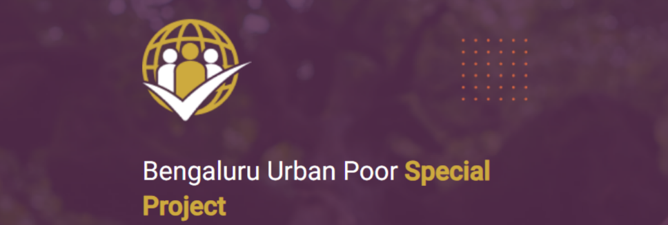
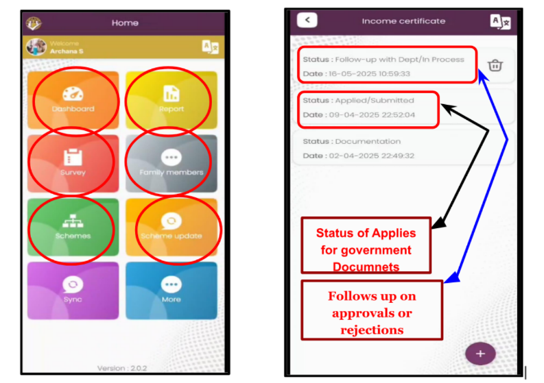
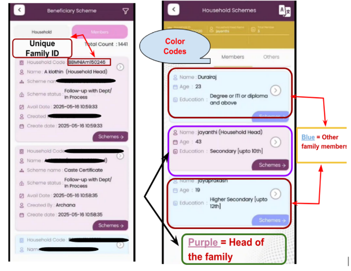
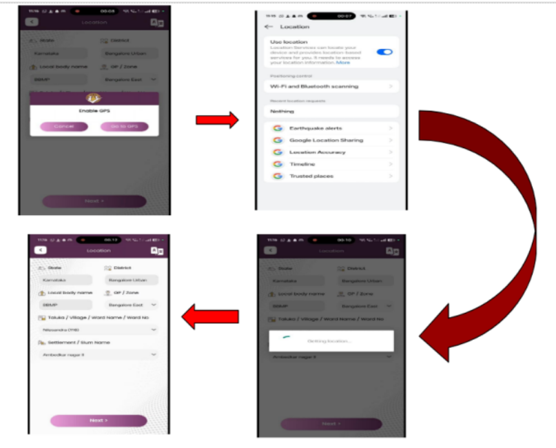

Understanding the BUPSP App - Technology in Field Practice

Today's field session offered a deep dive into the technical core of Maarga's operations, the Bangalore Urban Poor Special Project (BUPSP) App, which has since evolved into the Janadhikara Project App. Unlike Day 1, which was filled with community stories and field movement, today's interaction was more analytical. The team at Maarga patiently walked us through the app's interface, structure, and real world use cases.
We learned that the app is used exclusively by authorized community organizers (COs), who each have area specific logins—this ensures that every CO can only access data relevant to their slum clusters, reinforcing data privacy and accountability. The app is central to how Maarga:
- Surveys households
- Applies for government Documents
- Tracks entitlements
- Follows up on approvals or rejections
It acts like a personal case file system for every family, but on a digital platform.

How the Janadhikara (BUPSP) App Works
Here's what impressed us technically:
User Access and Role Based Permissions
- Every Community Organiser (CO) has a personalized login ID and password.
- Access is geo-restricted; COs only see data for the slum areas they are responsible for.
- This model ensures data decentralization while maintaining accountability and data privacy.
- Each user has a digital footprint (date of entry, ID, GPS location), which supports audit trails.
Household-Centric Architecture
- Unique Family ID: Every household has a unique ID, where each household has a dedicated record.
-
A typical family profile includes:
- Names, phone numbers, ward details
- Language, caste, contact, income, education
- Head of household and member details
- Scheme applications (e.g., pensions, AAY cards, DBT schemes)
- Document ownership (Aadhaar, PAN, Ration Card)
- Status updates
- Status on multiple government schemes
- Surveyor's name and date of data entry
Visual Cues with Color Codes
The app interface includes predefined colors to distinguish family roles:
- Purple = Head of the family
- Blue = Other family members
Filters and Dashboard: Staff can filter data by ward, slum name, or document status, allowing quick searches and bulk follow-ups.

Backend Integration with Government Systems
Scheme Tracker Integration: For many government services (like caste certificates or scholarships), the app redirects to official portals. Using the family's ID, the staff can:
- Tracks progress (Approved / In Progress / Cancelled)
- Shows reasons for rejection (e.g., missing rental agreement, name mismatch)
- Enables re-application or escalation by COs
Offline-first Design with Syncing Capabilities
Field teams work in areas with poor connectivity, so the app is designed for offline data entry.
-
Key features include:
- Master Download: Preloads updated questions/scheme modules
- Bulk Sync & Upload: Pushes local data to the central server when back online
- GPS Activation: Ensures location verification during key operations (like scholarship form submission)

Reflection: More Than an App A Layered Ecosystem
This session made me rethink how I view technology in social work. Often we think of tech tools as "efficient" or "fast." But what stood out today was how deeply layered and human centered this app actually is.
Yes, it tracks data. But its real purpose is:
- To reduce exclusion
- To make the invisible visible
- To equip grassroots workers with structure and evidence
We learned that in the early days, the app faced:
- Syncing issues
- Server slowdowns
- Community distrust ("What benefit will I get? Why are you collecting data again?")
Despite those hurdles, the app gradually became a field companion for COs. With proper training and persistent community engagement, even something as complex as digital governance became approachable and actionable.
Another powerful takeaway: the app doesn't just "record" reality—it helps shape it. By making people countable in the system, it also makes their rights claimable.
Wider Lens: Tech and Social Justice
The Janadhikara App is not just a tool—it's a manifestation of a rights based digital framework. It helps bridge three important gaps:
- Information Gap: Helping families know what they are eligible for
- Access Gap: Helping apply for schemes and track them
- Accountability Gap: Creating data to show what's working and what's not
In a country where many slum residents lack digital literacy, formal education, or even ID proof, apps like this—when used responsibly and ethically—can shift the power slightly toward the people, not just the system.
Final Thought: This App Is a Public Tech Infrastructure
The Janadhikara app isn't just a tool, it's a microcosm of digital public infrastructure for vulnerable populations. It bridges the last-mile disconnect between:
- Schemes that exist on paper
- And people who are often excluded from them
By combining tech, trust, and field presence, the app has evolved into a reliable tool that lets:
- Communities be counted
- Schemes be tracked
- Rights be claimed.
Note: All screenshots and field-based content in this post have been documented with the informed consent of the Community Organisers (COs) involved in the demonstration. These visuals are shared for academic and reflective learning purposes, and we remain committed to respecting the dignity, privacy, and efforts of those working at the grassroots.